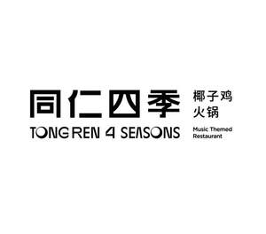

Trade Mark Journal No.2025/030 25 July 2025
UK00004233052 14 July 2025 (29,30,35,43)

- Class 29
- Processed seafood; Preserved vegetables; Fresh poultry; Poultry, not live; Poultry; Frozen meals consisting primarily of meat; Fresh meat; Fresh chicken; Deep frozen chicken; Meat and meat products; Fruit pulp; Prepared meals containing [principally] chicken; Processed meat products; Coconut milk for culinary purposes; Frozen meals consisting primarily of chicken.
- Class 30
- Fruit teas; Ginger [spice]; Tea-based beverages; Ice cream; Edible salt; Vinegar; Seasonings; Starch for food; Noodles; Pre-packaged lunches consisting primarily of rice, and also including meat, fish or vegetables; Sugar candy [for food]; Sugar; Coffee; Cereal-based savoury snacks.
- Class 35
- Internet marketing; Presentation of companies and their goods and services on the Internet; Providing consumer product information via the Internet; Presentation of companies on the Internet and other media; Business management consultancy, also via the Internet; Advertising via electronic media and specifically the internet; Organization of fashion shows for promotional purposes; Advertisements (Placing of -); Promotion of goods and services through sponsorship; Sponsorship search; Accounting; Systemization of information into computer databases; Personnel management consultancy; Sales promotion for others; Commercial administration of the licensing of the goods and services of others; Providing business information via a web site; Presentation of goods on communication media, for retail purposes; Advertising.
- Class 43
- Making reservations and bookings for restaurants and meals; Serving food and drink for guests; Delicatessens [restaurants]; Restaurant services; Bistro services; Take-away fast food services; Organisation of catering for birthday parties; Mobile catering services; Fast-food restaurant services; Catering for the provision of food and beverages; Take-away food and drink services; Restaurant reservation services; Reservation services for booking meals; Provision of information relating to restaurants; Restaurant and bar services.
Guangdong Juzong Holding Group Co., Ltd.
Representative: QUN CHI